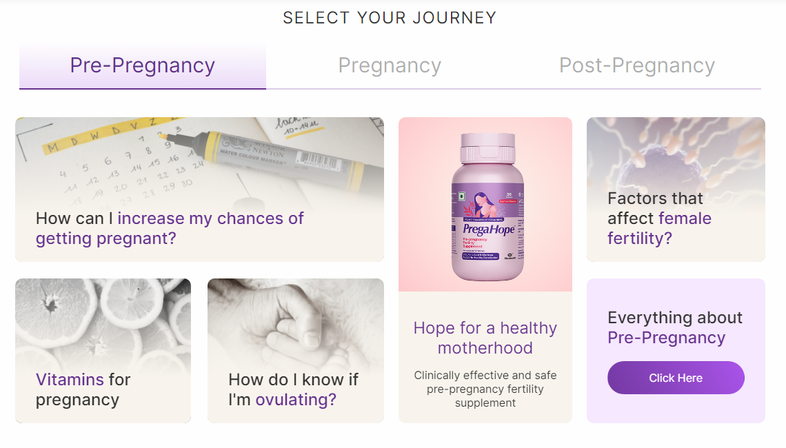
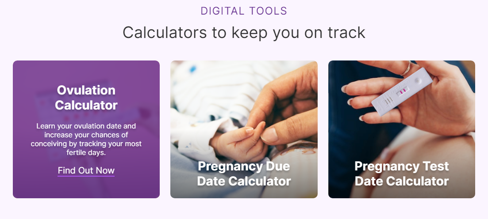
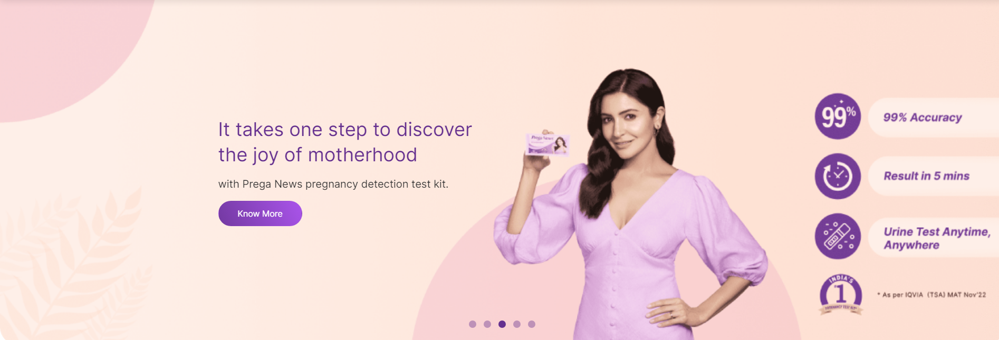
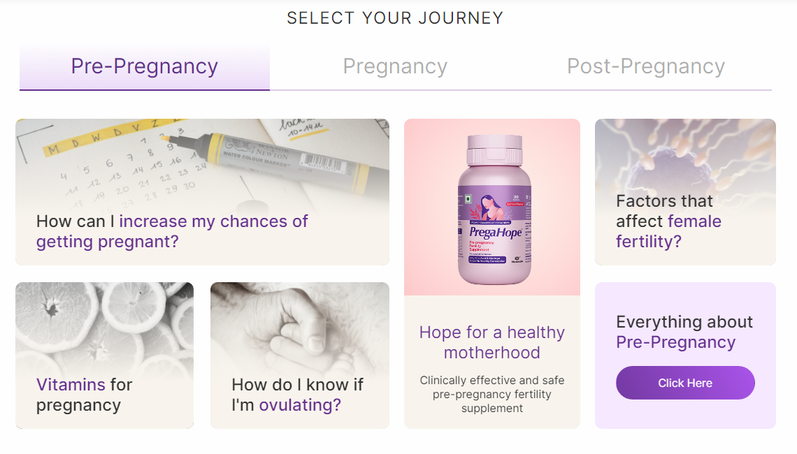
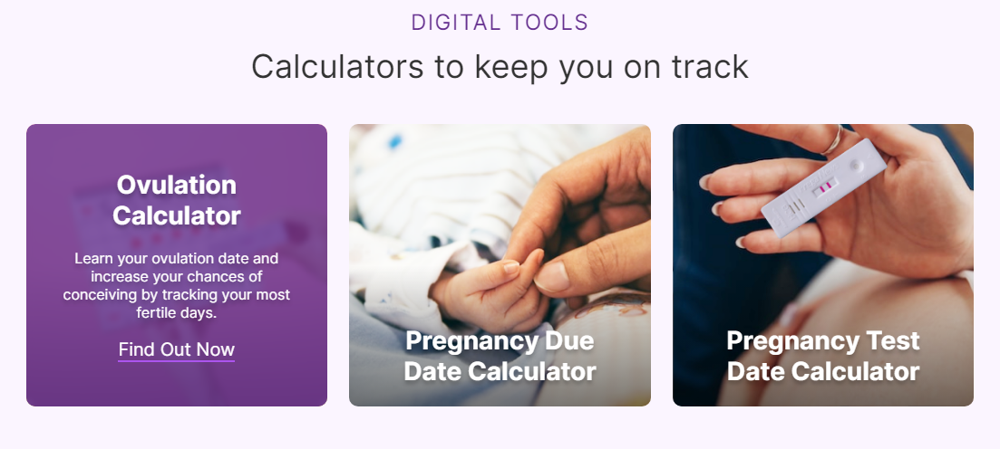
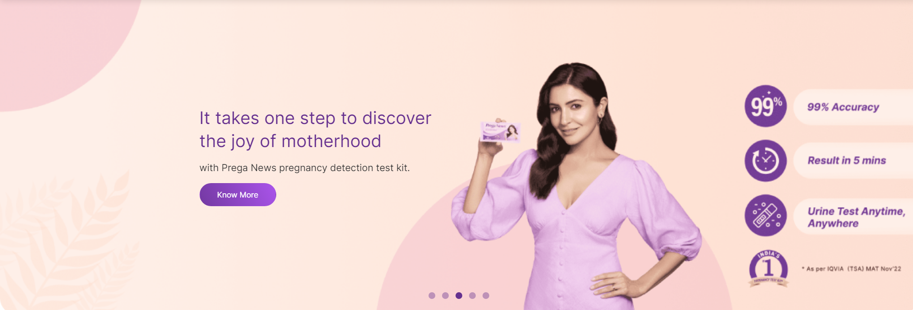

Prega News Website Design for Tekhne
 





About Tekhne
At Tekhne, a leading marketing company based in Mumbai, we specialize in transforming brands through innovative design and strategic marketing solutions. Our team is dedicated to creating user-centric digital experiences that drive engagement and business growth.
Client: Prega News
Prega News is a prominent brand in India, renowned for its home pregnancy test kits. The brand has earned the trust of millions of women through its accurate and easy-to-use products. Prega News approached Tekhne to redesign their website with the goal of enhancing user experience, improving accessibility, and creating a modern, visually appealing online presence.
Project Overview
The primary objective of the Prega News website redesign was to create a seamless and engaging user experience that reflects the brand's commitment to women's health and wellness. The redesign focused on: Modern Aesthetic: Updating the visual design to a clean, contemporary look that appeals to the target audience. User-Friendly Navigation: Simplifying the website's structure to ensure easy navigation and quick access to information. Mobile Responsiveness: Ensuring the site is fully responsive, providing an optimal viewing experience across all devices. Enhanced Content Presentation: Organizing content in a way that is informative and easily digestible, with a focus on the brand's key messages and product benefits.
My Role and Contributions
As a UI/UX Designer at Tekhne, I played a pivotal role in the redesign of the Prega News website. My contributions included: User Research and Analysis: Conducted comprehensive user research to understand the needs and preferences of the target audience. This involved surveys, user interviews, and analyzing website analytics to gather insights. Wireframing and Prototyping: Developed wireframes and interactive prototypes to map out the user journey and ensure intuitive navigation. Collaborated with stakeholders to iterate on designs based on feedback. Visual Design: Created high-fidelity mockups that align with Prega News's brand identity. Emphasized a clean, modern aesthetic with a focus on readability and user engagement. Responsive Design: Implemented a responsive design approach, ensuring the website performs optimally on desktops, tablets, and smartphones. This included designing for various screen sizes and resolutions. Usability Testing: Conducted usability testing sessions to identify pain points and areas for improvement. Used feedback to refine the design and enhance overall user experience. Collaboration with Developers: Worked closely with the development team to ensure accurate implementation of the design. Provided detailed design specifications and assets to facilitate a smooth development process.
Outcome
The redesigned Prega News website successfully achieved the project objectives, resulting in: A visually appealing and modern online presence that resonates with the target audience. Improved user engagement and ease of navigation, leading to a better overall user experience. Enhanced mobile responsiveness, providing a seamless experience across all devices. Positive feedback from users and stakeholders, highlighting the improved design and functionality. Visit the redesigned Prega News website: Prega News Website